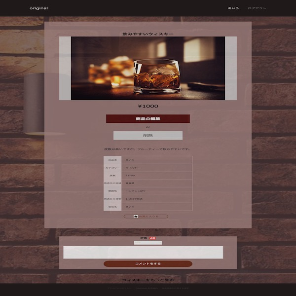

Original

開発環境
Ruby / Ruby on Rails / JavaScript / MySQL / GitHub / Render / Visual Studio Code
-
概要
制作時間 80時間 URL https://original-38923.onrender.com//a> ID admin PASS 2222 -
動作テスト
テスト用アカウント
mail test_user@hoge.com PASS testuser1234
OUTLINEアプリケーションの概要
オリジナルアプリケーションとして、お酒の販売・購入・コメント・検索ができるアプリケーションを開発しました。
主な機能は、ユーザー登録機能、およびお酒の出品と購入、コメント機能です。
トップページにアクセスすると、投稿順にお酒が表示されています。左上のプルダウンよりカテゴリをクリックすると、その分類におけるお酒のみを閲覧することができます。
ユーザー登録をすると、それらの商品にコメントをすることができるようになります。出品者は情報の編集・削除ができ、購入者は、購入が可能となります。
-
開発に至った経緯
学生アルバイト時代に、お酒の作り方が覚えられず、何の種類なのかなども説明できるまで時間がかかりました。同じ経験をされている新成人の方などもいるのではないかと考えました。
世の中には、いろんなお酒があり、苦手な人でも美味しく飲めるお酒があること、ご当地などあまり知られていないお酒があることから、いろいろなお酒を検索できるようにしたいとと思いました。 お酒を好む人同士のコミュニティができると、趣向の近い商品を探しやすくなると考えました。
同時に販売購入ができれば、一つのサイトの中で、購入者は簡単に気になった商品を取得でき、販売者はお酒を世に広めることができると考えました。
-
開発で工夫したこと
1つ目が本アプリケーションのポイントでジャンルのカテゴライズ機能です。カテゴリー管理にはancestryというRuby gemを用い、複数改装で管理できるようにしました。また、カテゴリーを各々が作成できる機能を設けました。しかし、これにはある課題が生じ、現在は機能を取り外しています。詳細は後述します。
2つ目がアプリのビュー表示です。お酒を多く提供しているバーをイメージして、少し暗めのシックな茶色をベースにデザインしました。今後は、カテゴリー別の背景など、大勢の飲み会のカテゴリ別では明るい色を用いたり、動きのあるCSSの導入によって、より凝ったデザインにしていきたいです。
-
今後実装したいと思っていること
ActiveAdminなどを用いて、管理機能を設けたいと考えています。
理由としては、ジャンルの修正追加を容易に行うためです。前述のとおり、カテゴリーを作成する機能を設けていましたが削除をしました。これは、ユーザーが好き勝手にカテゴリーを登録できてしまうと、重複の可能性があるためです。
そこで、ユーザーを、法人と個人に分類し、法人のみが投稿できる仕組みを考えています。その運用を実現するために管理機能が必要であると考えています。加えて、APIを使用してご当地のお酒を日本地図から検索できるようにする機能、投稿されたお酒を視覚的に把握できるためのグラフ作成や、お気に入り表示、ユーザーフォロー機能も実装したいと考えています。